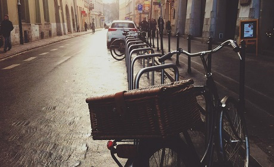
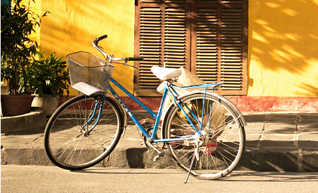
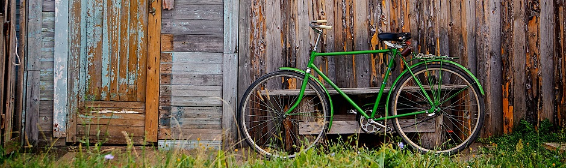

“Todas estas questões, devidamente ponderadas, levantam dúvidas sobre se a estrutura atual da organização possibilita uma melhor visão global.”
Mãe do Matheus
“Como acontece estas questões, devidamente ponderadas, levantam dúvidas sobre se a estrutura atual da organização possibilita uma melhor visão global.”
Matheus Lopes frazão
“As vezes estas questões, devidamente ponderadas, levantam dúvidas sobre se a estrutura atual da organização possibilita uma melhor visão global.”
Samila Lopes



"O verdadeiro segredo da felicidade está em ter um genuíno interesse por todos os detalhes da vida cotidiana”